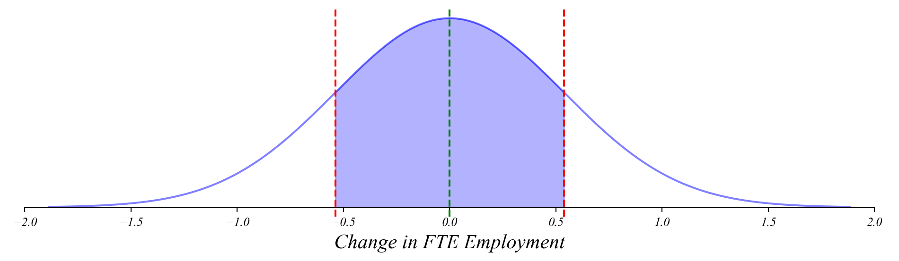
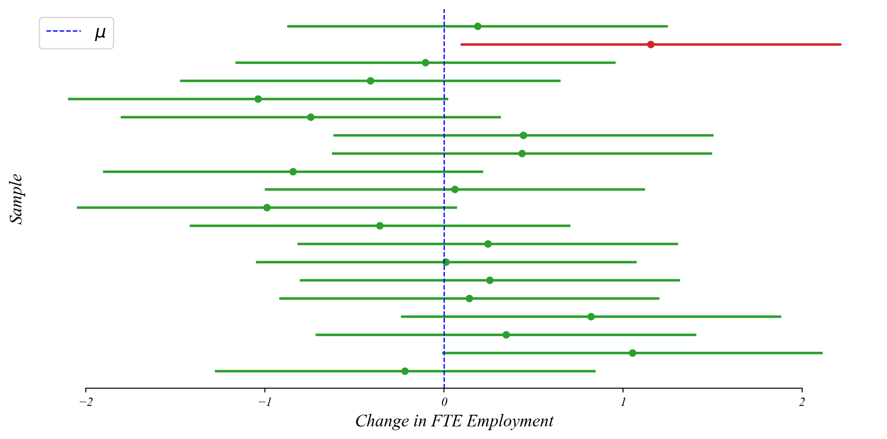
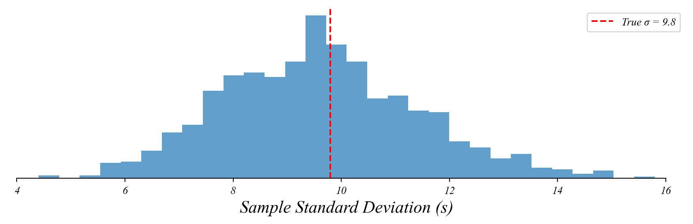
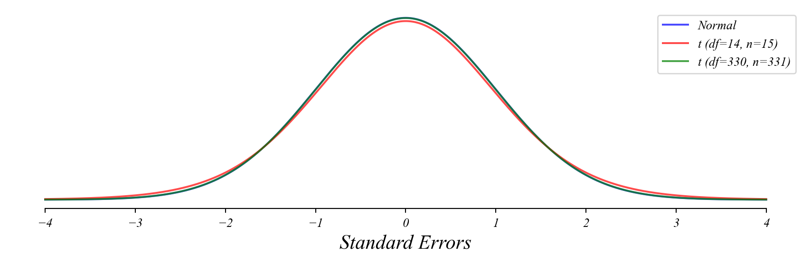
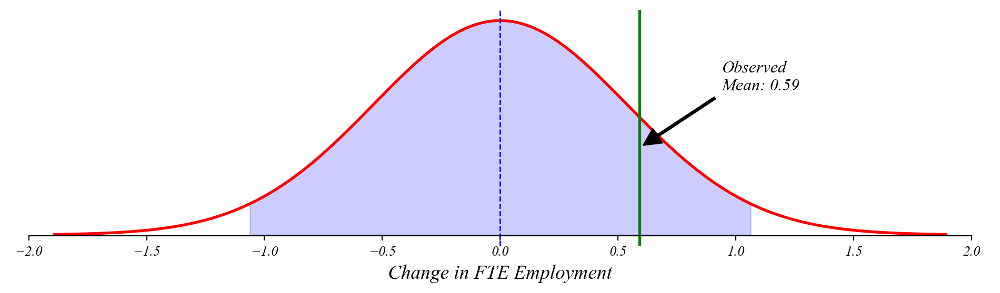
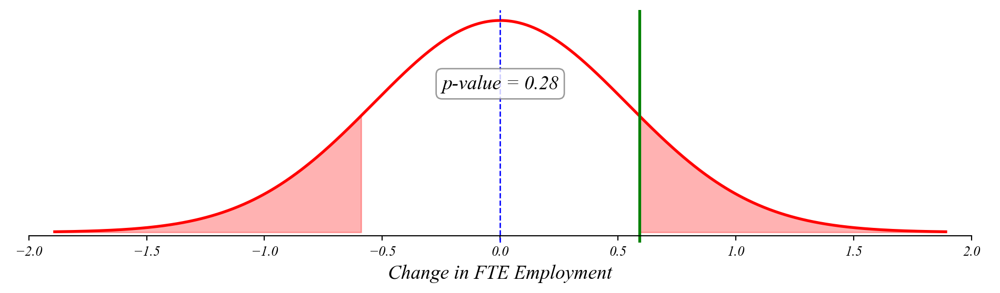

ECON 0150 | Economic Data Analysis
The economist’s data analysis skillset.
Part 3.3 | Confidence and Hypothesis Testing
Back to New Jersey
Card and Krueger surveyed 331 NJ fast food restaurants before and after a minimum wage increase.
- In 1992, NJ raised its minimum wage from $4.25 to $5.05
- The simplest economic theory predicts employment should fall
- Card and Krueger found: average change was +0.59 FTE workers per store
- But that’s a sample mean from 331 restaurants
> is +0.59 meaningfully different from zero? Or just noise?
Central Limit Theorem: Refresher
The sample mean follows a normal distribution around the true mean (\(\mu\)).
The standard deviation of the sample means is the standard error: \[SE = \frac{\sigma}{\sqrt{n}}\]
> as the sample size grows, the variability in sample means gets smaller
Confidence Intervals: Known \(\sigma\)
If we knew \(\sigma = 9.8\), we could calculate probabilities.
What’s the probability \(\bar{x}\) is within one standard error of \(\mu\) with \(n=331\)?
> \(P(\mu - SE \leq \bar{x} \leq \mu + SE) \approx 0.68\)
> we call \([\mu - \frac{\sigma}{\sqrt{n}}, \mu + \frac{\sigma}{\sqrt{n}}]\) a 68% confidence interval
Exercise 3.3 | Confidence Intervals: Known \(\sigma\)
\(\sigma = 9.8\) and \(n=331\)
Question: what’s the probability \(\bar{x}\) is closer than \(2\cdot SE\) to \(\mu\)?
Exercise 3.3 | Simulating Confidence Intervals
Simulate employment changes and calculate the 95% confidence interval.
Generate some sample data.
Calculate sample statistics.
> if we took many samples, 95% of the time this interval would contain the truth
The Problem
We centered the confidence interval on \(\mu\).
- But we don’t know \(\mu\) — that’s the whole point of the study
- If we knew the true effect of the minimum wage, we wouldn’t need the data
- So how is a confidence interval centered on \(\mu\) useful?
The Centerpoint Flip
The distance between \(\bar{x}\) and \(\mu\) is the same in both directions.
If \(\bar{x}\) is within 1.96 SE of \(\mu\), then \(\mu\) is within 1.96 SE of \(\bar{x}\).
> instead of asking where \(\bar{x}\) lands relative to \(\mu\)…
> we ask where \(\mu\) could be relative to our observed \(\bar{x}\)
The Centerpoint Flip
We can verify: the same samples pass both tests.

> if we drew many samples, 95% of the CIs we construct would contain \(\mu\)
The Confidence Interval for New Jersey
Center the 95% CI on Card and Krueger’s observed mean.
\[0.59 \pm 1.96 \times 0.54 = [-0.47, \; 1.65]\]
> zero is inside this interval — the data is consistent with no employment effect
> but the interval excludes large negative effects — ruling out the textbook prediction
Interpretation
What does “95% confident” really mean?
✅ If we repeated this study many times, 95% of the CIs would contain \(\mu\).
❌ There is NOT a 95% probability that \(\mu\) is in this particular interval.
> the confidence is in the method, not in any single interval
Confidence Intervals: Unknown \(\sigma\)
What if we don’t know \(\sigma\) either?
> we used \(\bar{x}\) to estimate \(\mu\)
> can we use \(s\) to estimate \(\sigma\)?
> yes, but there’s a catch…
Using \(s\) Instead of \(\sigma\)
Sample standard deviation (\(s\)) has its own sampling variability.

> with only 15 restaurants, \(s\) could be quite far from \(\sigma\) — this adds extra uncertainty
Normal vs t-Distribution
The t-distribution accounts for the variation in \(s\) around \(\sigma\).
> \(\bar{x}\) follows a normal distribution with \(\mu\) and \(\sigma\)
> since \(s\) is random, using it instead of \(\sigma\) introduces another source of uncertainty
> this gives us the t-distribution with \(n-1\) degrees of freedom

The t-Distribution
…accounts for the extra uncertainty in \(s\) around \(\sigma\).

> t-distribution has heavier tails than normal
> approaches normal as sample size (\(n\)) increases
Exercise 3.3 | Normal vs t
The probability of closeness will be too large if we use the Normal instead of t.
Putting It All Together
Now we can quantify our uncertainty about the true employment effect.
- Center the sampling distribution on \(\bar{x} = 0.59\).
- Width comes from \(S / \sqrt{n}\) — the sample standard error.
- Shape is the t-distribution with \(n - 1\) degrees of freedom.
The Card and Krueger Confidence Interval (\(\bar{x} = 0.59\), \(S \approx 9.8\), \(n = 331\), \(df = 330\)):
\[95\% \text{ CI}: \quad 0.59 \pm 1.967 \times 0.54 = [-0.47, \; 1.65]\]
> with \(df = 330\), the t-distribution is nearly identical to the normal (\(z = 1.960\))
Testing the Theory
What if we want to test a specific claim about the mean?
> economic theory predicts employment should fall — or at least not change
> Card and Krueger observed \(\bar{x} = +0.59\). Is that consistent with no effect?
> same math as before, but now we center the distribution on a specific hypothesis
> instead of finding where \(\mu\) might be, we’re testing a specific value of \(\mu\)
The Null Hypothesis
We formalize this approach by setting up a “null hypothesis”
Null Hypothesis (\(H_0\)): The minimum wage had no effect on employment
- \(H_0: \mu = 0\)
Alternative Hypothesis (\(H_1\)): The minimum wage changed employment
- \(H_1: \mu \neq 0\)
Testing Approach:
- Calculate how “surprising” our data would be if \(H_0\) were true
- If sufficiently surprising, we reject \(H_0\)
NJ Employment Change
If \(\bar{x}=0.59\), is that consistent with \(\mu_0=0\)?
> let’s see where our observed mean falls under the null distribution

> our observed mean is well within the 95% interval — not surprising if \(\mu = 0\)
The t-Statistic
How many standard errors is our sample mean from the null?
The t-statistic measures how many standard errors our sample mean is from the null value:
\[t = \frac{\bar{x} - \mu_0}{S/\sqrt{n}}\]
\[t = \frac{0.59 - 0}{9.8/\sqrt{331}} = \frac{0.59}{0.54} = 1.09\]
Where:
- \(\bar{x}\) is our sample mean (0.59 FTE)
- \(\mu_0\) is our null value (0)
- \(S\) is our sample standard deviation (9.8)
- \(n\) is our sample size (331)
Quantifying Surprise: p-values
How likely is it to get \(\bar{x}\) this far or farther from 0, if the true mean is 0?

> if \(\mu=0\), we’d see \(\bar{x}\) this far from 0 about 28% of the time — not surprising
> p-value > 0.05, so we don’t reject the claim that \(\mu = 0\)
The t-test
This example has become a formal hypothesis test.
One-sample t-test:
- \(H_0: \mu = 0\)
- \(H_1: \mu \neq 0\)
- Test statistic: \(t = 1.09\)
- Degrees of freedom: 330
- p-value: 0.28
Decision rule:
- If p-value < 0.05, reject \(H_0\)
- Otherwise, fail to reject \(H_0\)
What Card and Krueger Did Next
They compared NJ to Pennsylvania to sharpen the analysis.
- NJ alone: \(\bar{x} = +0.59\), not statistically significant (\(p \approx 0.28\))
- PA saw employment fall by 2.16 FTE workers per store
- Difference-in-differences: \(+2.76\) FTE (\(SE = 1.36\), \(p \approx 0.04\))
- The comparison removed confounding factors affecting both states
> we’ll see this approach — using control groups — when we get to regression in Part 4
Statistical vs. Practical Significance
A caution about hypothesis testing
Statistical significance:
- Formal rejection of the null hypothesis (p < 0.05)
- Only tells us if the effect is unlikely to be exactly zero
Practical significance:
- Whether the effect size matters in the real world
- Card and Krueger: the direction contradicted theory, even though NJ alone wasn’t significant
> always consider the magnitude of the effect, not just the p-value
Common Misinterpretations
What a p-value is NOT
❌ Not: The probability that \(H_0\) is true
- A p-value of 0.28 doesn’t mean there’s a 28% chance the minimum wage had no effect. It assumes the null is true and calculates how surprising our result would be.
Common Misinterpretations
What a p-value is NOT
❌ Not: The probability that the results occurred by chance
- All results reflect some combination of real effects and random variation. The p-value doesn’t separate these components.
Common Misinterpretations
What a p-value IS
✅ Correct: The probability of observing a test statistic at least as extreme as ours, if \(H_0\) were true
- It measures the compatibility between our data and the null hypothesis.
> the p-value answers “How surprising is this data if the null is true?” not “Is the null true?”
Looking Ahead
The hypothesis testing framework is powerful and general.
- Part 3.4 | The Simplest Linear Model — hypothesis testing as the simplest regression
- Part 4 | Bivariate Models — regression coefficients are tested using t-tests
> the tools we built today apply to every model we’ll see in Parts 4 and 5